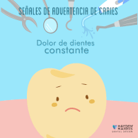

Cuando se comen o beben alimentos que contienen azúcares, las bacterias de la placa producen ácidos que atacan el esmalte dental. La gran adherencia de la placa mantiene estos ácidos en contacto con los dientes y, con el tiempo, el esmalte puede descomponerse. Entonces es cuando se forma la caries. Sintomas > Dolor de dientes constante. > Aumento de sensibilidad dental y dolor. > Agujeros perceptibles. > Aberturas en el diente afectado. |
 |